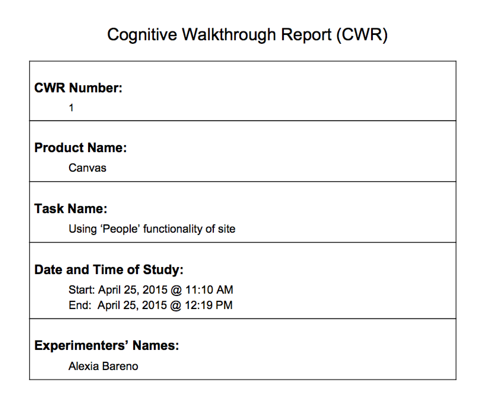
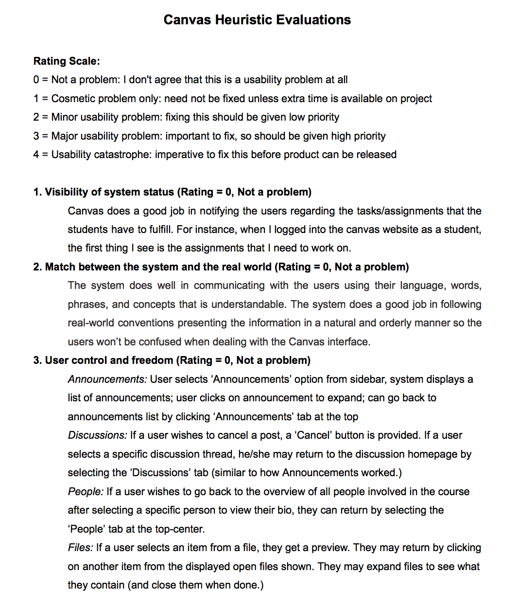

mad's portfolio
EEE Canvas |
IntroductionThis project was done in a team of four including myself. EEE Canvas is a course management system designed for both students and professors that bridges the communication gap between students to students and students to professors. Canvas has been fully developed, however, it has not been tested thoroughly with the stakeholders. Through the work of my team and I, we were able to gather information that needed to be changed using the usability attributes from student participants chosen through a list provided by the client. |
Cognitive WalkthroughFor our cognitive walkthrough, we came up with eight task scenarios for each of the eight different features – Announcements, Discussions, People, Files, Outcomes, Modules, Collaborations, Chat – that we had to test out. The cognitive walkthrough helped my team and I not only in being able to keep an eye on these minor cosmetic issues, but it also was helpful in helping us to formulate the tasks that we can hand to the participants when they will be doing the think-alouds. Overall, the cognitive walkthrough gave insight on what we were dealing with, and it also gave us a heads up to see if the participants would be running into the same issue as we did. |
 |
|  |
Heuristic EvaluationsThe Heuristic Evaluations served as the primary benchmark by which my team and I focused much of our usability assessment and redesign efforts; it served as our first ability to gauge the Canvas platform in its entirety without personal bias to negatively impact our evaluation of the technology. My team and I utilized Jakob Nielsen’s usability heuristics coupled with a rating scale that we developed to accurately measure how good or bad the existing Canvas user interface was. |
* Think Aloud Sessions *The think aloud sessions were conducted where the participants was given a to-do list where the objective of the session was to finish the task given without any collaboration from outside participants. |
* User Interview *Interviews were a critical component in our usability study because we gathered the most important information regarding user’s opinions about their Canvas experience through them. The interviews followed the think-aloud session and they consisted of questions pertaining to the participant’s opinions about how Canvas’ features felt, while completing the tasks that we had assigned to them. |
* Redesign/Mockups *Following the results from the think-aloud and user interviews, we were able to modify the system based on the feedback from our participants. We proceeded with creating new mockups with enhanced features based on the feedback given. |
Mockups |
Results/Conclusions/ReflectionThis project introduced me to the world of a user experience researcher where I was able to partake in the researching of the system with the help from my hardworking teammates. Through the guidance of the transparent communication with my clients, we were able to proudly deliver a project that made an impact to the entire school community. The passion that I developed as a user experience researcher role drove me to do my best during this project. The project ended with my team and I giving a very satisfactory presentation to our clients. |